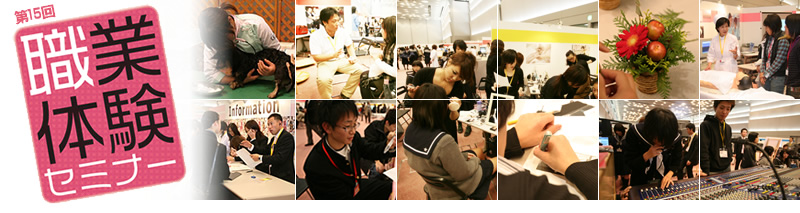
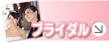

home
>> 主催・後援・協力校・支援団体
主 催
職業体験セミナー実行委員会
後 援
大阪府 ／大阪府教育委員会 ／兵庫県教育委員会 ／京都府教育委員会 ／奈良県教育委員会 ／和歌山県教育委員会 ／滋賀県教育委員会 ／三重県教育委員会 ／大阪市教育委員会 ／大阪府立高等学校PTA協議会 ／一般社団法人 大阪府専修学校各種学校連合会 ／産経新聞社
協力校
大阪医療技術学園専門学校
／
大阪ハイテクノロジー専門学校
／
大阪保健福祉専門学校
／
大阪医療福祉専門学校
／
大阪医療看護専門学校
／
新大阪歯科技工士専門学校
／
新大阪歯科衛生士専門学校
／
東洋医療専門学校
／
神戸医療福祉専門学校
／
神戸製菓専門学校
／
大阪スクールオブミュージック専門学校
／
大阪ダンス＆アクターズ専門学校
／
大阪コミュニケーションアート専門学校
／
大阪ECO動物海洋専門学校
／
大阪キャリナリー製菓調理専門学校
／
滋慶おもてなし＆ブライダル・観光専門学校
／
放送芸術学院専門学校
／
大阪アニメーションスクール専門学校
／
京都医健専門学校
／
大阪スクールオブミュージック高等専修学校
／
中央工学校OSAKA
支援団体
公益社団法人全国高等学校文化連盟 ／大阪府警察 ／大阪市消防局 ／株式会社エフエムちゅうおう ／名鉄観光サービス株式会社 ／ジャスティス中川法律事務所 ／石川社会保険労務事務所 ／公認会計士内田吉穂事務所 ／ILC国際語学センター大阪校 ／職業体験ネット運営センター ／ＶＩＳＴＡ ＡＲＴＳ ／株式会社ブレーンスタッフコンサルタンツ ／ジケイ・スペース株式会社 ／DUCE ／Ｗestキャリアガイダンスセンター ／株式会社日本販売企画 ／一般財団法人 滋慶教育科学研究所 ／株式会社 ライフマップ